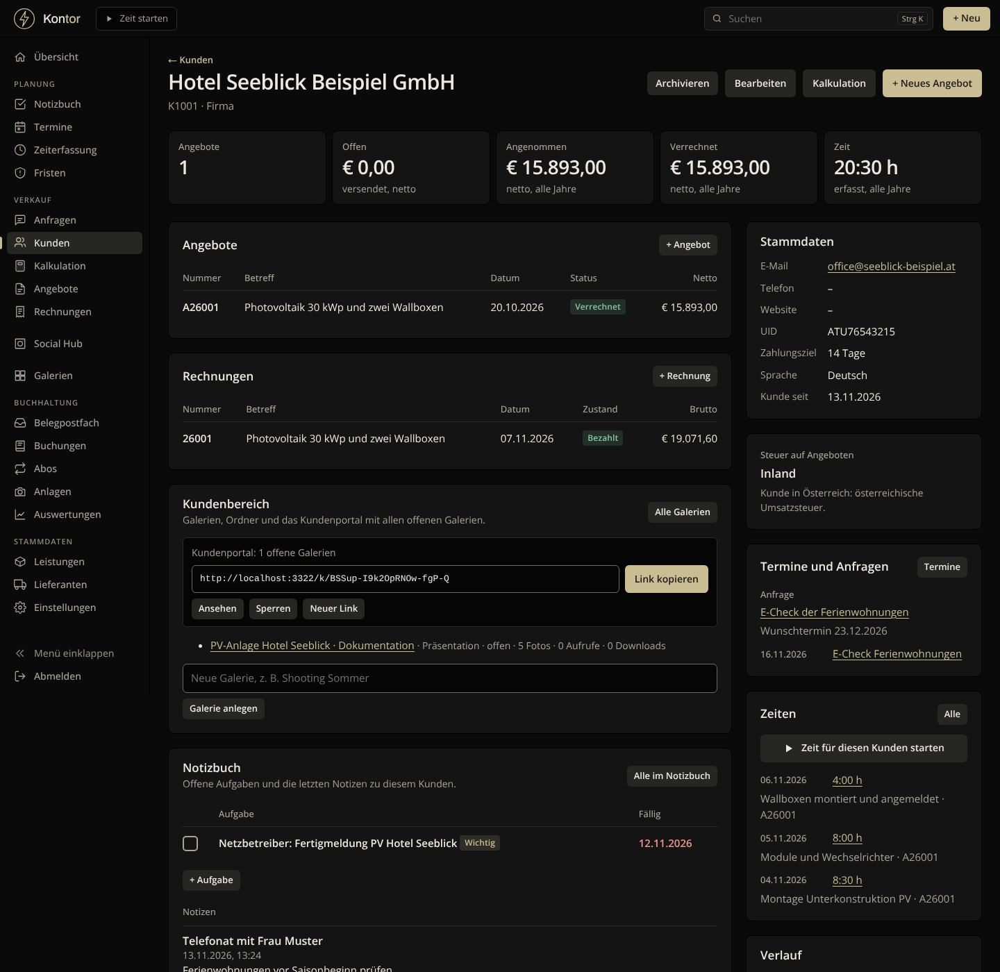
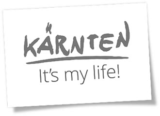
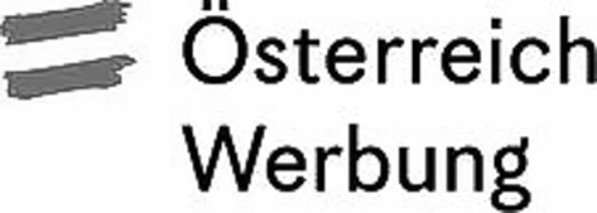
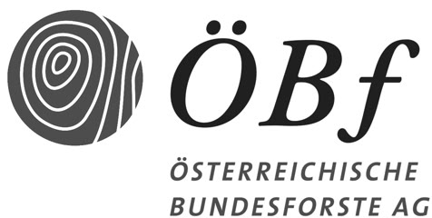
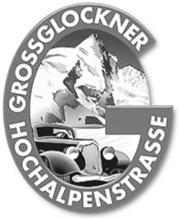
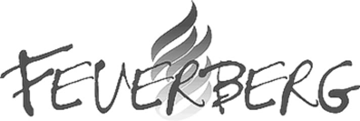
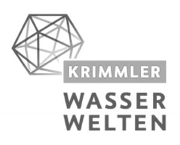

Webdesign und Apps aus Kärnten, die Ihre Arbeit leichter machen.
Code und Licht aus Klagenfurt entwickelt Web-Apps, Dashboards und Kundenportale nach Ihren Abläufen, gestaltet Websites, die gefunden werden, und optimiert bestehende Seiten für Google. Für Unternehmen und Tourismusbetriebe in Kärnten, Villach und ganz Österreich.
Ob neue Website, eigene App oder mehr Sichtbarkeit bei Google: Wir hören zuerst zu, wie Ihr Betrieb arbeitet, und bauen dann genau das, was Ihnen Zeit spart und Kunden bringt.
App-Entwicklung nach Ihren Abläufen
Individuelle Software und Web-Apps, die genau das abbilden, was in Ihrem Betrieb passiert: von der Anfrage über Angebot, Auftrag und Rechnung bis zur Auswertung. Statt Excel-Listen, Zetteln und fünf Programmen eine Anwendung, in der jeder Schritt mit dem nächsten verbunden ist. Am Computer und am Handy, installierbar wie eine App.
Alle Kennzahlen auf einen Blick, Termine und Fristen in einer Zeitleiste, und ein eigener Bereich, in dem Ihre Kunden Dateien abholen, auswählen und freigeben.
Wir sehen uns an, wo Zeit verloren geht: doppelte Eingaben, Belege abtippen, Zeiten nachtragen. Dann automatisieren wir, was sich wiederholt, etwa Belege per E-Mail, Termine aus dem Kalender oder Rechnungen aus erfassten Stunden.
Website erstellen lassen oder die Homepage erneuern: schnelle, klare Websites für Unternehmen und Tourismusbetriebe, vom One-Pager bis zum kompletten Firmenauftritt. Responsiv, barrierearm und von Anfang an für Suchmaschinen gebaut.
Ihre Website gibt es schon, aber Google findet sie kaum? Wir prüfen Technik, Ladezeit, Inhalte und Suchbegriffe und setzen die Verbesserungen direkt um, auch in WordPress.
Textvorschläge aus Ihren Bausteinen, Belege, die sich selbst auslesen, Antworten aus Ihren eigenen Daten: KI dort, wo sie wirklich Arbeit abnimmt, und immer mit Ihnen als letzter Instanz.
Dazu, was eine gute digitale Lösung rundum braucht
Schnittstellen
E-Mail-Postfach, Google Kalender, Instagram und Facebook, Export nach Excel, PDF und Word.
Wartung und Hosting
Updates, Sicherheit, Sicherungen und neue Funktionen nach dem Start, aus einer Hand.
Landingpages
Fokussierte Seiten für Kampagnen, Produkte und Aktionen, schnell geladen und messbar.
Spiele und Gamification
Browser-Games und Gewinnspiele, die Ihre Marke spielerisch erlebbar machen, wie das Kärnten-Rätsel.
Referenzprojekt · Web-App
Kontor: der ganze Auftrag in einer Anwendung
Für eine Foto- und Videoproduktion haben wir eine Plattform entwickelt, die jeden Kunden von der ersten Anfrage bis zur fertigen Buchhaltung begleitet. Ein Datensatz statt Word, Excel, WeTransfer und Notizzetteln.
Anfrage
Kalkulation
Angebot
Zeiten und Termine
Kundenportal
Rechnung
Buchhaltung
Auswertung
Angebote und Rechnungen als PDF und Word im eigenen Briefpapier, mit Anzahlung, Schlussrechnung und Storno
Kundenkarte mit allen Angeboten, Rechnungen, Zeiten, Notizen und Dateien
Kundenportal für Fotos und Videos: auswählen, kommentieren, freigeben, herunterladen
Belege per Foto oder E-Mail, Buchungsvorschlag, UVA und E1a nach österreichischen Kennzahlen
Social Hub: Beiträge für Instagram, Facebook und LinkedIn planen und freigeben
Alle Namen und Zahlen in den Bildern sind Beispieldaten.

So arbeiten wir
Vom ersten Gespräch zur fertigen Lösung
Zuhören und Abläufe verstehen
Wir gehen Ihren Alltag Schritt für Schritt durch: Wer macht was, wo entstehen Doppelarbeit und Wartezeiten, welche Daten gibt es schon?
Konzept und Prototyp
Sie sehen früh, wie die Lösung aussieht und sich anfühlt, und entscheiden mit, bevor viel Aufwand entsteht.
Entwicklung in Etappen
Wir bauen in überschaubaren Schritten. Jeder Schritt ist sofort nutzbar und wird mit Ihnen getestet.
Start und Betreuung
Datenübernahme, Einschulung, Wartung und Erweiterungen: Wir bleiben nach dem Start an Ihrer Seite.
SEO-Optimierung
Mehr Sichtbarkeit für Ihre bestehende Website
Als SEO-Agentur aus Klagenfurt prüfen wir, warum Ihre Website bei Google nicht dort steht, wo sie hingehört, und setzen die Verbesserungen um: Technik, Ladezeit, Suchbegriffe, Texte, Überschriften, interne Links und strukturierte Daten.
Wie das in der Praxis aussieht, zeigt michaelstabentheiner.at: 34 Seiten neu gegliedert, Texte auf die Hauptbegriffe ausgerichtet, Ladezeit am Handy deutlich verkürzt.
Namhafte Auftraggeber vertrauen auf unsere Konzeption und unsere Foto- und Videoproduktionen.






Über uns
Von Kärnten in die digitale Welt
Hinter Code und Licht steht Michael Stabentheiner, MSc: Marketingstudium an der Universität Klagenfurt, zehn Jahre Erfahrung in der IT-Branche und seit 2011 Fotograf und Filmer. Aus dieser Mischung entstehen Lösungen, die technisch sauber sind und trotzdem gut aussehen.
Wir denken Software, Website und Inhalte zusammen. Das eigene Unternehmen ist dabei unser Prüfstand: Kontor, die Plattform aus unserer Referenz, läuft zuerst bei uns selbst, bevor wir ähnliche Lösungen für Kunden bauen.
Sitz in Köttmannsdorf bei Klagenfurt, Kärnten
Für kleine und mittelständische Unternehmen, Tourismus und öffentliche Auftraggeber
Moderne, KI-gestützte Entwicklung: schneller am Ziel, ohne an Qualität zu sparen